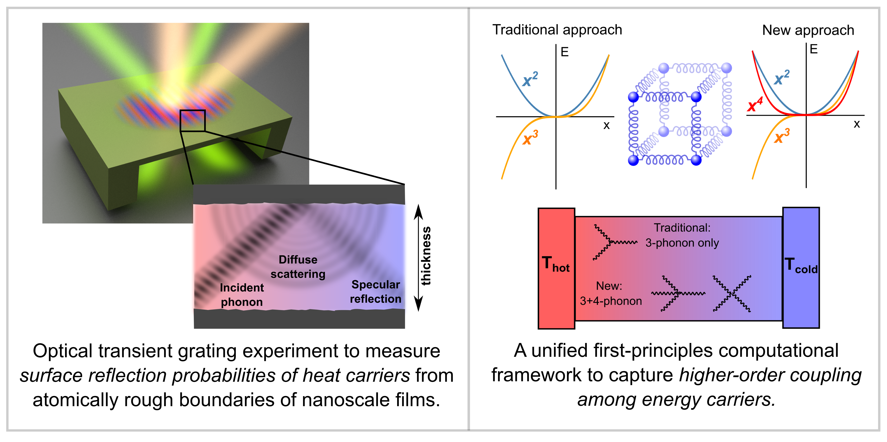

Navaneetha K. Ravichandran
Assistant Professor,
Department of Mechanical Engineering,
Indian Institute of Science (IISc),
Bangalore - 560012, India
Email: navaneeth@iisc.ac.in
Google Scholar
LinkedIn
I received my Ph.D. in Mechanical Engineering (2016) and M.S. in Space Engineering (2012) from Caltech, and a dual degree (B.Tech. & M.Tech) in Mechanical Engineering from IIT Madras (2011). My Ph.D. advisor was Prof. Austin Minnich. Subsequently, I was a post-doctoral research fellow at the Department of Physics, Boston College from 2016-2019, working with Prof. David Broido.
News
I am broadly interested in studying the electronic and thermal properties of semiconductors and metals. Specifically, I develop computational and experimental tools to probe the microscopic, quantum-mechanical interactions among energy carriers that drive these macroscopic properties. For my Ph.D. thesis, I set up an optical transient grating experiment and extracted the probabilities of mirror-like (specular) and diffuse surface reflections of heat carriers (phonons), which cause the dominant resistance to heat flow through nanoscale devices. In my post-doctoral work, I have developed a new unified first-principles computational framework to capture the higher-order coupling among phonons at high temperatures and extreme environments, and its effect on thermal conductivity, structural phase transitions and carrier transport in materials.
* :Equal contribution
Ultrahigh Thermal Conductivity in Isotope-enriched Cubic Boron Nitride
Ke Chen*, Bai Song*, Navaneetha K. Ravichandran*, Qiye Zheng, Xi Chen, Hwijong Lee, Haoran Sun, Sheng Li, Geethal Amila Gamage, Fei Tian, Zhiwei Ding, Qichen Song, Akash Rai, Hanlin Wu, Pawan Koirala, Aaron J. Schmidt, Kenji Watanabe, Bing Lv, Zhifeng Ren, Li Shi, David G. Cahill, Takashi Taniguchi, David Broido & Gang Chen, Science 367 (6477), 555-559, 2020
Non-monotonic Pressure Dependence of the Thermal Conductivity of Boron Arsenide
Navaneetha K. Ravichandran & David Broido, Nature Communications 10 (827), 2019
Spectrally Resolved Specular Reflections of Thermal Phonons from Atomically Rough Surfaces
Navaneetha K. Ravichandran, Hang Zhang & Austin Minnich, Physical Review X 8 (4), 041004, 2018
Unified First-principles Theory of Thermal Properties of Insulators
Navaneetha K. Ravichandran & David Broido, Physical Review B 98 (8), 085205, 2018
Unusual High Thermal Conductivity in Boron Arsenide Bulk Crystals
Fei Tian, Bai Song, Xi Chen, Navaneetha K. Ravichandran, Yinchuan Lv, Ke Chen, Sean Sullivan, Jaehyun Kim, Yuanyuan Zhou, Te-Huan Liu, Miguel Goni, Zhiwei Ding, Jingying Sun, Geethal Amila Gamage Udalamatta Gamage, Haoran Sun, Hamidreza Ziyaee, Shuyuan Huyan, Liangzi Deng, Jianshi Zhou, Aaron J Schmidt, Shuo Chen, Ching-Wu Chu, Pinshane Y Huang, David Broido, Li Shi, Gang Chen & Zhifeng Ren, Science 361 (6402), 582-585, 2018
Fermi Surface Nesting and Phonon Frequency Gap Drive Anomalous Thermal Transport
Chunhua Li, Navaneetha K. Ravichandran, Lucas Lindsay & David Broido, Physical Review Letters 121 (17), 175901, 2018
Quasiballistic Thermal Transport from Nanoscale Heaters and the Role of the Spatial Frequency
Xiangwen Chen, Chengyun Hua, Hang Zhang, Navaneetha K. Ravichandran & Austin Minnich, Physical Review Applied 10 (5), 054068, 2018
Experimental Metrology to Obtain Thermal Phonon Transmission Coefficients at Solid Interfaces
Chengyun Hua, Xiangwen Chen, Navaneetha K. Ravichandran & Austin Minnich, Physical Review B 95 (20), 205423, 2017
Role of Thermalizing and Nonthermalizing Walls in Phonon Heat Conduction along Thin Films
Navaneetha K. Ravichandran & Austin Minnich, Physical Review B 93 (3), 035314, 2016
Coherent and Incoherent Thermal Transport in Nanomeshes
Navaneetha K. Ravichandran & Austin Minnich, Physical Review B 89 (20), 205432, 2014
Performance of Numerical Schemes in the Simulation of Two-phase Free Flows and Wall Bounded Mini Channel Flows
R. Navaneetha Krishnan, S. Vivek, Dhiman Chatterjee & Sarit K. Das, Chemical Engineering Science 65 (18), 5117-5136, 2010
Zhifeng Ren, Fei Tian, Gang Chen, Bai Song, Ke Chen, Li Shi, Xi Chen, Sean Sullivan, David Broido & Navaneetha K. Ravichandran, Unusual High Thermal Conductivity in Boron Arsenide Bulk Crystals, US 62/687,662, filing date: 06/20/2018
Phonon Scattering from Material Boundaries and Higher Order Anharmonicity
Center for Quantum Materials and Condensed Matter Physics, Stony Brook University NY (2018)
Higher Order Phonon Scattering in Semiconductors
Anharmonicity and Thermal Properties of Solids, CECAM, Paris, France (2018)
Ab-initio Thermal Properties of Semiconductors with Higher Order Anharmonicities
APS March meeting, Los Angeles CA (2018)
Ab-initio Thermal Properties of Semiconductors with Higher Order Anharmonicities
APS March meeting, New Orleans LA (2017)
Thermal Phonon Diffraction from Atomically Rough Surfaces
MRS Spring meeting, Phoenix, AZ (2017)
Probing Spectral Phonon-Boundary Interactions Using Quasiballistic Transport
Thermal Transport at the Nanoscale, Telluride CO (2016)
Direct Measurement of Phonon Specularity Parameter in Silicon Membranes using Transient Grating Spectroscopy
ASME Summer Heat Transfer Conference, Washington DC (2016)
The Role of Phonon Boundary Thermalization in Heat Conduction along Thin Films
15thInternational Conference on Phonon Scattering in Condensed Matter, Phonons, University of Nottingham, UK (2015)
Direct Measurement of Phonon Specularity Parameter in Silicon Membranes
MRS Spring meeting, San Fransisco, CA (2015)
Coherent and Incoherent Thermal Transport in Nanomeshes
11th AIAA/ASME Joint Heat Transfer and Thermophysics Conference, Atlanta, GA (2014)
Coherent Thermal Transport in Nanomeshes
ASME Summer Heat Transfer Conference, Minneapolis, MN (2013)
Dow-Resnick Graduate Fellowship (2014-2016) awarded by the Resnick Sustainability Institute for graduate studies at Caltech
GALCIT Fellowship (2011-2012) for graduate studies at Caltech
Anantharamakrishnan Merit Prize (2011) awarded by the Department of Mechanical Engineering, IIT Madras, for the best individual dual degree project
Institute Merit Award (2009-2010) awarded by the Department of Mechanical Engineering, IIT Madras
Summer Research Fellowship (2008) awarded by the Jawaharlal Nehru Center for Advanced Scientific Research (JNCASR), Bangalore, India
Institute Merit Award (2007-2008) awarded by the Department of Mechanical Engineering, IIT Madras